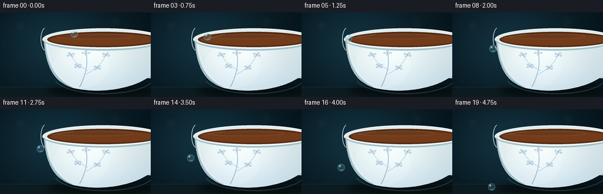
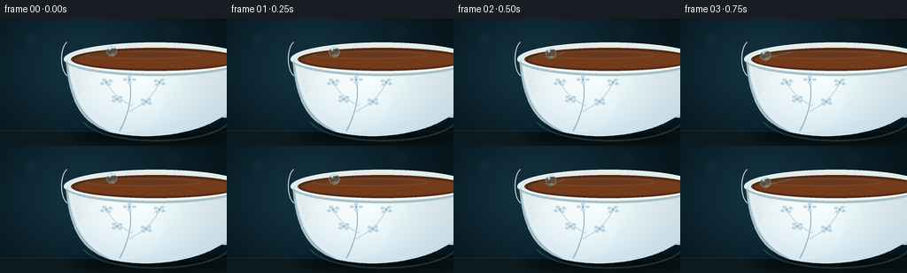

CODING AGENTS AS PIXEL WORLD MODELS
traex/GPT-5.6-Sol · mechanics_0052
点击播放 · 原生 RGB 像素
逐轮保存的候选
回放视频、检查图与代码变化。
每份候选均可单独播放。实际图片检查记录在下方工具轨迹中。
候选 01播放与检查图
点击播放 · 原生 RGB 像素


展开代码变化
--- 上一保存版本
+++ 本次保存版本
@@ -0,0 +1,222 @@
+from pathlib import Path
+import math
+import numpy as np
+from PIL import Image, ImageDraw, ImageFilter
+from artifact_io import save
+
+W, H, N = 256, 144, 20
+S = 4
+WS, HS = W*S, H*S
+rng = np.random.default_rng(52)
+
+def sc(v): return int(round(v*S))
+def box(b): return tuple(sc(x) for x in b)
+
+def cubic(p0,p1,p2,p3,n=50):
+ out=[]
+ for t in np.linspace(0,1,n):
+ q=1-t
+ out.append((sc(q**3*p0[0]+3*q*q*t*p1[0]+3*q*t*t*p2[0]+t**3*p3[0]),
+ sc(q**3*p0[1]+3*q*q*t*p1[1]+3*q*t*t*p2[1]+t**3*p3[1])))
+ return out
+
+def composite_rgb(base, layer, mask):
+ base.paste(layer, (0,0), mask)
+
+def build_static():
+ # Deep teal studio background with a softly illuminated center-left.
+ yy, xx = np.mgrid[0:HS, 0:WS]
+ x=xx/S; y=yy/S
+ glow=np.exp(-(((x-93)/104)**2+((y-53)/83)**2))
+ vign=np.clip(((x-W/2)/(W*.75))**2+((y-H/2)/(H*.95))**2,0,1)
+ bg=np.empty((HS,WS,3),dtype=np.float32)
+ bg[:,:,0]=8+10*glow-4*vign
+ bg[:,:,1]=24+25*glow-7*vign
+ bg[:,:,2]=31+31*glow-7*vign
+ # very subtle fine-grain avoids a synthetic flat field
+ noise=rng.normal(0,0.6,(HS,WS,1))
+ bg=np.clip(bg+noise,0,255).astype(np.uint8)
+ im=Image.fromarray(bg,'RGB')
+
+ # Defocused background highlights.
+ bokeh=Image.new('RGBA',(WS,HS),(0,0,0,0)); d=ImageDraw.Draw(bokeh)
+ for bx,by,br,a in [(34,23,8,20),(55,96,4,12),(196,16,11,9),(20,115,6,11)]:
+ d.ellipse(box((bx-br,by-br,bx+br,by+br)),fill=(130,198,197,a))
+ bokeh=bokeh.filter(ImageFilter.GaussianBlur(sc(5)))
+ im=Image.alpha_composite(im.convert('RGBA'),bokeh).convert('RGB')
+
+ # Dark tabletop and cup's contact shadow.
+ table=Image.new('RGBA',(WS,HS),(0,0,0,0)); td=ImageDraw.Draw(table)
+ td.rectangle((0,sc(127),WS,HS),fill=(12,27,31,255))
+ td.line((0,sc(127),WS,sc(127)),fill=(79,106,105,45),width=sc(1))
+ shadow=Image.new('RGBA',(WS,HS),(0,0,0,0)); sd=ImageDraw.Draw(shadow)
+ sd.ellipse(box((79,124,278,143)),fill=(0,4,5,165))
+ shadow=shadow.filter(ImageFilter.GaussianBlur(sc(5)))
+ table=Image.alpha_composite(table,shadow)
+ im=Image.alpha_composite(im.convert('RGBA'),table).convert('RGB')
+
+ # Handle behind the bowl (mostly cropped, suggesting a full teacup).
+ handle=Image.new('RGBA',(WS,HS),(0,0,0,0)); hd=ImageDraw.Draw(handle)
+ hd.ellipse(box((221,56,291,112)),fill=(183,203,207,255))
+ hd.ellipse(box((232,65,280,102)),fill=(17,39,44,255))
+ hd.arc(box((222,57,290,111)),190,315,fill=(247,249,242,255),width=sc(3))
+ im=Image.alpha_composite(im.convert('RGBA'),handle).convert('RGB')
+
+ # Main porcelain bowl mask.
+ left=cubic((74,45),(77,83),(86,116),(122,128),55)
+ bottom=cubic((122,128),(164,139),(226,132),(258,106),65)
+ right=cubic((258,106),(270,88),(276,60),(274,43),45)
+ bowl_poly=left+bottom+right+[(sc(74),sc(45))]
+ bowlmask=Image.new('L',(WS,HS),0); ImageDraw.Draw(bowlmask).polygon(bowl_poly,fill=255)
+ # Porcelain gradient: warm central sheen and cool lower/edge reflection.
+ light=np.exp(-(((x-150)/78)**2+((y-70)/70)**2))
+ edgeblue=np.clip((y-58)/90,0,1)
+ porcelain=np.empty((HS,WS,3),dtype=np.float32)
+ porcelain[:,:,0]=205+42*light-20*edgeblue
+ porcelain[:,:,1]=221+33*light-10*edgeblue
+ porcelain[:,:,2]=224+28*light+2*edgeblue
+ porcelain=np.clip(porcelain,0,255).astype(np.uint8)
+ composite_rgb(im,Image.fromarray(porcelain,'RGB'),bowlmask)
+
+ # Soft broad body highlights and shaded left contour.
+ shades=Image.new('RGBA',(WS,HS),(0,0,0,0)); sh=ImageDraw.Draw(shades)
+ sh.ellipse(box((91,52,185,129)),fill=(255,255,250,37))
+ sh.line(cubic((75,48),(78,83),(88,112),(122,128),50),fill=(91,138,153,115),width=sc(3))
+ sh.line(cubic((79,48),(82,78),(91,107),(119,123),50),fill=(255,255,255,115),width=sc(1))
+ shades.putalpha(Image.composite(shades.getchannel('A'),Image.new('L',(WS,HS),0),bowlmask))
+ im=Image.alpha_composite(im.convert('RGBA'),shades).convert('RGB')
+
+ # Restrained cobalt underglaze botanical decoration, clipped to bowl.
+ pat=Image.new('RGBA',(WS,HS),(0,0,0,0)); pd=ImageDraw.Draw(pat)
+ cobalt=(36,93,145,105); cobalt2=(49,119,170,72)
+ pd.line(cubic((135,127),(145,108),(150,88),(146,70),55),fill=cobalt,width=sc(1.2))
+ pd.line(cubic((149,99),(134,91),(125,82),(120,72),35),fill=cobalt2,width=sc(1))
+ pd.line(cubic((146,105),(162,97),(174,86),(180,72),35),fill=cobalt2,width=sc(1))
+ for cx,cy,ang in [(120,72,-.5),(180,72,.6),(146,69,0),(132,91,-.7),(165,94,.7)]:
+ for k in range(4):
+ a=ang+k*math.pi/2
+ ex=cx+5*math.cos(a); ey=cy+3*math.sin(a)
+ pd.ellipse(box((ex-2.5,ey-1.6,ex+2.5,ey+1.6)),fill=(35,95,154,58))
+ pd.ellipse(box((cx-1.4,cy-1.4,cx+1.4,cy+1.4)),fill=(28,82,137,100))
+ pat_alpha=np.minimum(np.asarray(pat.getchannel('A')),np.asarray(bowlmask)).astype(np.uint8)
+ pat.putalpha(Image.fromarray(pat_alpha,'L'))
+ im=Image.alpha_composite(im.convert('RGBA'),pat).convert('RGB')
+
+ # Rim: outer white oval, tea, inner reflection. It sits over the bowl top.
+ rim=Image.new('RGBA',(WS,HS),(0,0,0,0)); rd=ImageDraw.Draw(rim)
+ rd.ellipse(box((72,27,278,65)),fill=(225,236,235,255),outline=(249,250,244,255),width=sc(1))
+ rd.ellipse(box((80,33,271,59)),fill=(91,47,25,255))
+ # Tea gradient and reflected window light.
+ tea=Image.new('RGBA',(WS,HS),(0,0,0,0)); tdraw=ImageDraw.Draw(tea)
+ tdraw.ellipse(box((83,35,269,57.5)),fill=(119,61,26,210))
+ tdraw.ellipse(box((96,37,226,45)),fill=(197,119,54,34))
+ tea=tea.filter(ImageFilter.GaussianBlur(sc(.7)))
+ rim=Image.alpha_composite(rim,tea)
+ rd=ImageDraw.Draw(rim)
+ # Bright front lip and cool underside establish the physical edge.
+ rd.arc(box((72,27,278,65)),3,177,fill=(255,255,250,245),width=sc(2))
+ rd.arc(box((72,27,278,65)),8,173,fill=(154,189,199,230),width=sc(5))
+ rd.arc(box((73,27,277,62)),9,172,fill=(246,249,245,255),width=sc(2))
+ # localized gleam at leftmost edge
+ rd.arc(box((69,25,88,66)),108,250,fill=(255,255,255,225),width=sc(1))
+ im=Image.alpha_composite(im.convert('RGBA'),rim).convert('RGB')
+
+ # A soft cool bounce along lower porcelain.
+ bounce=Image.new('RGBA',(WS,HS),(0,0,0,0)); bd=ImageDraw.Draw(bounce)
+ bd.arc(box((91,82,262,139)),7,166,fill=(114,167,183,55),width=sc(2))
+ im=Image.alpha_composite(im.convert('RGBA'),bounce).convert('RGB')
+ return im
+
+STATIC=build_static()
+
+def droplet_position(i):
+ # A clearly readable three-act motion: glide on rim, curl around lip, free fall.
+ if i <= 5:
+ u=i/5
+ # smooth acceleration toward left edge
+ e=u*u*(3-2*u)
+ return (126-46*e, 36.7+7.4*e, 6.1)
+ if i == 6: return (75.5,47.8,6.15)
+ if i == 7: return (71.2,54.7,6.2)
+ d=i-8
+ return (68.9-0.20*d, 61.8+0.58*d*d, 6.2)
+
+def add_steam(frame,i):
+ # Barely visible drifting steam gives depth but keeps droplet dominant.
+ lay=Image.new('RGBA',(WS,HS),(0,0,0,0)); dr=ImageDraw.Draw(lay)
+ phase=i*0.32
+ for j,(sx,sy) in enumerate([(146,31),(190,29)]):
+ pts=[]
+ for q in np.linspace(0,1,34):
+ px=sx+3.0*math.sin(q*4.1+phase+j)-2*q
+ py=sy-24*q
+ pts.append((sc(px),sc(py)))
+ dr.line(pts,fill=(211,235,232,18),width=sc(1))
+ lay=lay.filter(ImageFilter.GaussianBlur(sc(1.8)))
+ return Image.alpha_composite(frame.convert('RGBA'),lay).convert('RGB')
+
+def add_wet_trace(frame,i):
+ if i<=0: return frame
+ # A very thin wet glint left on the porcelain rim.
+ xcur=droplet_position(min(i,6))[0]
+ lay=Image.new('RGBA',(WS,HS),(0,0,0,0)); dr=ImageDraw.Draw(lay)
+ pts=[]
+ for q in np.linspace(0,1,30):
+ xx=126+(xcur-126)*q
+ yy=37.7+(44.5-37.7)*q
+ pts.append((sc(xx),sc(yy)))
+ dr.line(pts,fill=(202,244,250,70),width=sc(.75))
+ return Image.alpha_composite(frame.convert('RGBA'),lay).convert('RGB')
+
+def draw_droplet(frame,cx,cy,r,attached=False):
+ arr=np.asarray(frame).astype(np.float32).copy()
+ yy,xx=np.mgrid[0:HS,0:WS]
+ px=xx/S; py=yy/S
+ dx=(px-cx)/r; dy=(py-cy)/r
+ rr=dx*dx+dy*dy
+ inside=rr<=1
+ # Refraction: offset sample opposite the surface normal.
+ srcx=np.clip((xx - dx*S*1.7).round().astype(int),0,WS-1)
+ srcy=np.clip((yy - dy*S*1.7).round().astype(int),0,HS-1)
+ source=np.asarray(frame).astype(np.float32)[srcy,srcx]
+ nz=np.sqrt(np.clip(1-rr,0,1))
+ fres=(1-nz)**1.7
+ tint=np.zeros_like(arr); tint[:]=[89,180,205]
+ alpha=(0.15+0.25*fres+0.07*nz)[...,None]
+ sphere=source*(1-alpha)+tint*alpha
+ # dark lower-left internal refraction and bright lower caustic
+ shade=np.clip(1-0.16*np.exp(-((dx+.25)**2/.22+(dy-.28)**2/.17)),.78,1)[...,None]
+ sphere*=shade
+ hi=np.exp(-((dx+.38)**2/.055+(dy+.43)**2/.07))[...,None]
+ sphere=sphere*(1-.82*hi)+255*(.82*hi)
+ caust=np.exp(-((dx-.12)**2/.18+(dy-.64)**2/.018))[...,None]
+ sphere=sphere*(1-.42*caust)+np.array([206,249,255])*(.42*caust)
+ arr[inside]=sphere[inside]
+ # Crisp Fresnel ring, softened by supersampling at final reduction.
+ ring=(rr>.83)&(rr<=1)
+ arr[ring]=arr[ring]*0.63+np.array([159,226,239])*0.37
+ # Tiny contact bridge only at the moment of leaving the rim.
+ out=Image.fromarray(np.clip(arr,0,255).astype(np.uint8),'RGB')
+ if attached:
+ lay=Image.new('RGBA',(WS,HS),(0,0,0,0)); dr=ImageDraw.Draw(lay)
+ dr.line((sc(cx+3.8),sc(cy-2.5),sc(76),sc(46)),fill=(157,222,233,120),width=sc(.75))
+ out=Image.alpha_composite(out.convert('RGBA'),lay).convert('RGB')
+ return out
+
+def make_frames():
+ frames=[]
+ for i in range(N):
+ fr=add_steam(STATIC.copy(),i)
+ fr=add_wet_trace(fr,i)
+ cx,cy,r=droplet_position(i)
+ fr=draw_droplet(fr,cx,cy,r,attached=(i in (6,7)))
+ # Downsample gives clean cinematic antialiasing.
+ fr=fr.resize((W,H),Image.Resampling.LANCZOS).convert('RGB')
+ frames.append(np.asarray(fr,dtype=np.uint8))
+ return np.stack(frames)
+
+if __name__=='__main__':
+ case_dir=Path(__file__).resolve().parent
+ frames=make_frames()
+ save(frames,case_dir)
+ print(f'saved {frames.shape} {frames.dtype}')
可观测工具轨迹
实际执行的命令与返回图片。
命令 1exit 0
/bin/bash -lc "ls -la && printf '\\n--- prompt.txt ---\\n' && cat prompt.txt && printf '\\n--- GENERATION_RULES.md ---\\n' && cat GENERATION_RULES.md && printf '\\n--- task_spec.json ---\\n' && cat task_spec.json"
命令 2exit 0
/bin/bash -lc "sed -n '1,240p' artifact_io.py"
命令 3exit 0
/bin/bash -lc "cat > generate.py <<'PY'
from pathlib import Path
import math
import numpy as np
from PIL import Image, ImageDraw, ImageFilter
from artifact_io import save
W, H, N = 256, 144, 20
S = 4
WS, HS = W*S, H*S
rng = np.random.default_rng(52)
def sc(v): return int(round(v*S))
def box(b): return tuple(sc(x) for x in b)
def cubic(p0,p1,p2,p3,n=50):
out=[]
for t in np.linspace(0,1,n):
q=1-t
out.append((sc(q**3*p0[0]+3*q*q*t*p1[0]+3*q*t*t*p2[0]+t**3*p3[0]),
sc(q**3*p0[1]+3*q*q*t*p1[1]+3*q*t*t*p2[1]+t**3*p3[1])))
return out
def composite_rgb(base, layer, mask):
base.paste(layer, (0,0), mask)
def build_static():
# Deep teal studio background with a softly illuminated center-left.
yy, xx = np.mgrid[0:HS, 0:WS]
x=xx/S; y=yy/S
glow=np.exp(-(((x-93)/104)**2+((y-53)/83)**2))
vign=np.clip(((x-W/2)/(W*.75))**2+((y-H/2)/(H*.95))**2,0,1)
bg=np.empty((HS,WS,3),dtype=np.float32)
bg[:,:,0]=8+10*glow-4*vign
bg[:,:,1]=24+25*glow-7*vign
bg[:,:,2]=31+31*glow-7*vign
# very subtle fine-grain avoids a synthetic flat field
noise=rng.normal(0,0.6,(HS,WS,1))
bg=np.clip(bg+noise,0,255).astype(np.uint8)
im=Image.fromarray(bg,'RGB')
# Defocused background highlights.
bokeh=Image.new('RGBA',(WS,HS),(0,0,0,0)); d=ImageDraw.Draw(bokeh)
for bx,by,br,a in [(34,23,8,20),(55,96,4,12),(196,16,11,9),(20,115,6,11)]:
d.ellipse(box((bx-br,by-br,bx+br,by+br)),fill=(130,198,197,a))
bokeh=bokeh.filter(ImageFilter.GaussianBlur(sc(5)))
im=Image.alpha_composite(im.convert('RGBA'),bokeh).convert('RGB')
# Dark tabletop and cup's contact shadow.
table=Image.new('RGBA',(WS,HS),(0,0,0,0)); td=ImageDraw.Draw(table)
td.rectangle((0,sc(127),WS,HS),fill=(12,27,31,255))
td.line((0,sc(127),WS,sc(127)),fill=(79,106,105,45),width=sc(1))
shadow=Image.new('RGBA',(WS,HS),(0,0,0,0)); sd=ImageDraw.Draw(shadow)
sd.ellipse(box((79,124,278,143)),fill=(0,4,5,165))
shadow=shadow.filter(ImageFilter.GaussianBlur(sc(5)))
table=Image.alpha_composite(table,shadow)
im=Image.alpha_composite(im.convert('RGBA'),table).convert('RGB')
# Handle behind the bowl (mostly cropped, suggesting a full teacup).
handle=Image.new('RGBA',(WS,HS),(0,0,0,0)); hd=ImageDraw.Draw(handle)
hd.ellipse(box((221,56,291,112)),fill=(183,203,207,255))
hd.ellipse(box((232,65,280,102)),fill=(17,39,44,255))
hd.arc(box((222,57,290,111)),190,315,fill=(247,249,242,255),width=sc(3))
im=Image.alpha_composite(im.convert('RGBA'),handle).convert('RGB')
# Main porcelain bowl mask.
left=cubic((74,45),(77,83),(86,116),(122,128),55)
bottom=cubic((122,128),(164,139),(226,132),(258,106),65)
right=cubic((258,106),(270,88),(276,60),(274,43),45)
bowl_poly=left+bottom+right+[(sc(74),sc(45))]
bowlmask=Image.new('L',(WS,HS),0); ImageDraw.Draw(bowlmask).polygon(bowl_poly,fill=255)
# Porcelain gradient: warm central sheen and cool lower/edge reflection.
light=np.exp(-(((x-150)/78)**2+((y-70)/70)**2))
edgeblue=np.clip((y-58)/90,0,1)
porcelain=np.empty((HS,WS,3),dtype=np.float32)
porcelain[:,:,0]=205+42*light-20*edgeblue
porcelain[:,:,1]=221+33*light-10*edgeblue
porcelain[:,:,2]=224+28*light+2*edgeblue
porcelain=np.clip(porcelain,0,255).astype(np.uint8)
composite_rgb(im,Image.fromarray(porcelain,'RGB'),bowlmask)
# Soft broad body highlights and shaded left contour.
shades=Image.new('RGBA',(WS,HS),(0,0,0,0)); sh=ImageDraw.Draw(shades)
sh.ellipse(box((91,52,185,129)),fill=(255,255,250,37))
sh.line(cubic((75,48),(78,83),(88,112),(122,128),50),fill=(91,138,153,115),width=sc(3))
sh.line(cubic((79,48),(82,78),(91,107),(119,123),50),fill=(255,255,255,115),width=sc(1))
shades.putalpha(Image.composite(shades.getchannel('A'),Image.new('L',(WS,HS),0),bowlmask))
im=Image.alpha_composite(im.convert('RGBA'),shades).convert('RGB')
# Restrained cobalt underglaze botanical decoration, clipped to bowl.
pat=Image.new('RGBA',(WS,HS),(0,0,0,0)); pd=ImageDraw.Draw(pat)
cobalt=(36,93,145,105); cobalt2=(49,119,170,72)
pd.line(cubic((135,127),(145,108),(150,88),(146,70),55),fill=cobalt,width=sc(1.2))
pd.line(cubic((149,99),(134,91),(125,82),(120,72),35),fill=cobalt2,width=sc(1))
pd.line(cubic((146,105),(162,97),(174,86),(180,72),35),fill=cobalt2,width=sc(1))
for cx,cy,ang in [(120,72,-.5),(180,72,.6),(146,69,0),(132,91,-.7),(165,94,.7)]:
for k in range(4):
a=ang+k*math.pi/2
ex=cx+5*math.cos(a); ey=cy+3*math.sin(a)
pd.ellipse(box((ex-2.5,ey-1.6,ex+2.5,ey+1.6)),fill=(35,95,154,58))
pd.ellipse(box((cx-1.4,cy-1.4,cx+1.4,cy+1.4)),fill=(28,82,137,100))
pat_alpha=np.minimum(np.asarray(pat.getchannel('A')),np.asarray(bowlmask)).astype(np.uint8)
pat.putalpha(Image.fromarray(pat_alpha,'L'))
im=Image.alpha_composite(im.convert('RGBA'),pat).convert('RGB')
# Rim: outer white oval, tea, inner reflection. It sits over the bowl top.
rim=Image.new('RGBA',(WS,HS),(0,0,0,0)); rd=ImageDraw.Draw(rim)
rd.ellipse(box((72,27,278,65)),fill=(225,236,235,255),outline=(249,250,244,255),width=sc(1))
rd.ellipse(box((80,33,271,59)),fill=(91,47,25,255))
# Tea gradient and reflected window light.
tea=Image.new('RGBA',(WS,HS),(0,0,0,0)); tdraw=ImageDraw.Draw(tea)
tdraw.ellipse(box((83,35,269,57.5)),fill=(119,61,26,210))
tdraw.ellipse(box((96,37,226,45)),fill=(197,119,54,34))
tea=tea.filter(ImageFilter.GaussianBlur(sc(.7)))
rim=Image.alpha_composite(rim,tea)
rd=ImageDraw.Draw(rim)
# Bright front lip and cool underside establish the physical edge.
rd.arc(box((72,27,278,65)),3,177,fill=(255,255,250,245),width=sc(2))
rd.arc(box((72,27,278,65)),8,173,fill=(154,189,199,230),width=sc(5))
rd.arc(box((73,27,277,62)),9,172,fill=(246,249,245,255),width=sc(2))
# localized gleam at leftmost edge
rd.arc(box((69,25,88,66)),108,250,fill=(255,255,255,225),width=sc(1))
im=Image.alpha_composite(im.convert('RGBA'),rim).convert('RGB')
# A soft cool bounce along lower porcelain.
bounce=Image.new('RGBA',(WS,HS),(0,0,0,0)); bd=ImageDraw.Draw(bounce)
bd.arc(box((91,82,262,139)),7,166,fill=(114,167,183,55),width=sc(2))
im=Image.alpha_composite(im.convert('RGBA'),bounce).convert('RGB')
return im
STATIC=build_static()
def droplet_position(i):
# A clearly readable three-act motion: glide on rim, curl around lip, free fall.
if i <= 5:
u=i/5
# smooth acceleration toward left edge
e=u*u*(3-2*u)
return (126-46*e, 36.7+7.4*e, 6.1)
if i == 6: return (75.5,47.8,6.15)
if i == 7: return (71.2,54.7,6.2)
d=i-8
return (68.9-0.20*d, 61.8+0.58*d*d, 6.2)
def add_steam(frame,i):
# Barely visible drifting steam gives depth but keeps droplet dominant.
lay=Image.new('RGBA',(WS,HS),(0,0,0,0)); dr=ImageDraw.Draw(lay)
phase=i*0.32
for j,(sx,sy) in enumerate([(146,31),(190,29)]):
pts=[]
for q in np.linspace(0,1,34):
px=sx+3.0*math.sin(q*4.1+phase+j)-2*q
py=sy-24*q
pts.append((sc(px),sc(py)))
dr.line(pts,fill=(211,235,232,18),width=sc(1))
lay=lay.filter(ImageFilter.GaussianBlur(sc(1.8)))
return Image.alpha_composite(frame.convert('RGBA'),lay).convert('RGB')
def add_wet_trace(frame,i):
if i<=0: return frame
# A very thin wet glint left on the porcelain rim.
xcur=droplet_position(min(i,6))[0]
lay=Image.new('RGBA',(WS,HS),(0,0,0,0)); dr=ImageDraw.Draw(lay)
pts=[]
for q in np.linspace(0,1,30):
xx=126+(xcur-126)*q
yy=37.7+(44.5-37.7)*q
pts.append((sc(xx),sc(yy)))
dr.line(pts,fill=(202,244,250,70),width=sc(.75))
return Image.alpha_composite(frame.convert('RGBA'),lay).convert('RGB')
def draw_droplet(frame,cx,cy,r,attached=False):
arr=np.asarray(frame).astype(np.float32).copy()
yy,xx=np.mgrid[0:HS,0:WS]
px=xx/S; py=yy/S
dx=(px-cx)/r; dy=(py-cy)/r
rr=dx*dx+dy*dy
inside=rr<=1
# Refraction: offset sample opposite the surface normal.
srcx=np.clip((xx - dx*S*1.7).round().astype(int),0,WS-1)
srcy=np.clip((yy - dy*S*1.7).round().astype(int),0,HS-1)
source=np.asarray(frame).astype(np.float32)[srcy,srcx]
nz=np.sqrt(np.clip(1-rr,0,1))
fres=(1-nz)**1.7
tint=np.zeros_like(arr); tint[:]=[89,180,205]
alpha=(0.15+0.25*fres+0.07*nz)[...,None]
sphere=source*(1-alpha)+tint*alpha
# dark lower-left internal refraction and bright lower caustic
shade=np.clip(1-0.16*np.exp(-((dx+.25)**2/.22+(dy-.28)**2/.17)),.78,1)[...,None]
sphere*=shade
hi=np.exp(-((dx+.38)**2/.055+(dy+.43)**2/.07))[...,None]
sphere=sphere*(1-.82*hi)+255*(.82*hi)
caust=np.exp(-((dx-.12)**2/.18+(dy-.64)**2/.018))[...,None]
sphere=sphere*(1-.42*caust)+np.array([206,249,255])*(.42*caust)
arr[inside]=sphere[inside]
# Crisp Fresnel ring, softened by supersampling at final reduction.
ring=(rr>.83)&(rr<=1)
arr[ring]=arr[ring]*0.63+np.array([159,226,239])*0.37
# Tiny contact bridge only at the moment of leaving the rim.
out=Image.fromarray(np.clip(arr,0,255).astype(np.uint8),'RGB')
if attached:
lay=Image.new('RGBA',(WS,HS),(0,0,0,0)); dr=ImageDraw.Draw(lay)
dr.line((sc(cx+3.8),sc(cy-2.5),sc(76),sc(46)),fill=(157,222,233,120),width=sc(.75))
out=Image.alpha_composite(out.convert('RGBA'),lay).convert('RGB')
return out
def make_frames():
frames=[]
for i in range(N):
fr=add_steam(STATIC.copy(),i)
fr=add_wet_trace(fr,i)
cx,cy,r=droplet_position(i)
fr=draw_droplet(fr,cx,cy,r,attached=(i in (6,7)))
# Downsample gives clean cinematic antialiasing.
fr=fr.resize((W,H),Image.Resampling.LANCZOS).convert('RGB')
frames.append(np.asarray(fr,dtype=np.uint8))
return np.stack(frames)
if __name__=='__main__':
case_dir=Path(__file__).resolve().parent
frames=make_frames()
save(frames,case_dir)
print(f'saved {frames.shape} {frames.dtype}')
PY
python generate.py
ls -lh pixels.npz inspection.png index.html frames/00.png"视觉工具实际返回图片 1

保存候选 1 份；完成命令 3 次；可验证图片返回 1 张。原始 API 响应与完整日志保留在本地。